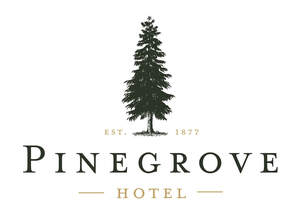

Trade Mark Journal No.2025/045 7 November 2025
UK00004286245 29 October 2025 (41,43,44,45)

- Class 41
- Casino facilities; Nightclub services.
- Class 43
- Bar and restaurant services; Restaurant and bar services; Hotel restaurant services; Salad bars [restaurant services]; Sushi restaurant services; Beer bar services; Snack bar services; Carvery restaurant services; Coffee bar services; Wine bar services; Bar services; Restaurant services incorporating licensed bar facilities; Restaurant services; Resort hotel services; Hotel room booking services; Hotel reservations; Japanese restaurant services; Restaurant reservation services; Spanish restaurant services; Tempura restaurant services; Ramen restaurant services; Hotel catering services; Serving food and drink in restaurants and bars; Hotel services; Reservation of hotel accommodation; Cocktail lounge buffets; Providing hotel and motel services; Providing food and drink in restaurants and bars; Booking of hotel rooms for travellers; Fast-food restaurant services; Take-out restaurant services; Hotel reservation services; Self-service restaurant services; Hotel accommodation services; Booking of hotel accommodation; Rental of bar equipment; Take-away restaurant services; Hotel accommodation reservation services; Serving food and drink for guests in restaurants; Pet hotel services; Juice bar services; Providing room reservation and hotel reservation services; Restaurant services provided by hotels; Mobile restaurant services; Tapas bars; Providing food and drink for guests in restaurants; Udon and soba restaurant services; Reservation of restaurants; Washoku restaurant services; Grill restaurants; Catering of food and drinks; Providing hotel accommodation; Salad bars; Restaurants; Food and drink catering; Catering of food and drink; Catering (Food and drink -); Provision of hotel accommodation; Provision of food and drink in restaurants; Arranging of hotel accommodation; Arranging hotel accommodation; Food and drink catering for cocktail parties; Cocktail lounge services; Lounge services (Cocktail -); Resort hotels; Food and drink catering for banquets; Cafe services; Hotel information; Reservation and booking services for restaurants and meals; Providing reviews of restaurants and bars; Restaurant services for the provision of fast food; Hospitality services [food and drink]; Carry-out restaurants; Reservation of accommodation in hotels; Restaurants (Self-service -); Self-service restaurants; Serving food and drink in doughnut shops; Wine bars; Hookah lounge services; Tourist restaurants; Motel services; Booking agency services for hotel accommodation; Agency services for booking hotel accommodation; Food and drink catering for institutions; Providing restaurant services; Providing food and drink catering services for convention facilities; Providing food and drink in bistros; Corporate hospitality (provision of food and drink); Serving food and drink in Internet cafes; Serving food and drink for guests; Guesthouse; Restaurant information services; Rental of towels for hotels; Bar information services; Hotels and motels; Providing accommodation in hotels and motels; Accommodation bureau services [hotels, boarding houses]; Providing food and drink in doughnut shops; Hotels, hostels and boarding houses, holiday and tourist accommodation; Room reservation services; Club services for the provision of food and drink; Providing food and drink catering services for exhibition facilities; Fast food restaurants; Catering for the provision of food and drink; Booking of campground accommodation; Consultancy services in the field of food and drink catering; Cocktail lounges.
- Class 44
- Hire of washroom facilities.
- Class 45
- Hotel concierge services.
Pinegrove Hotel Ltd